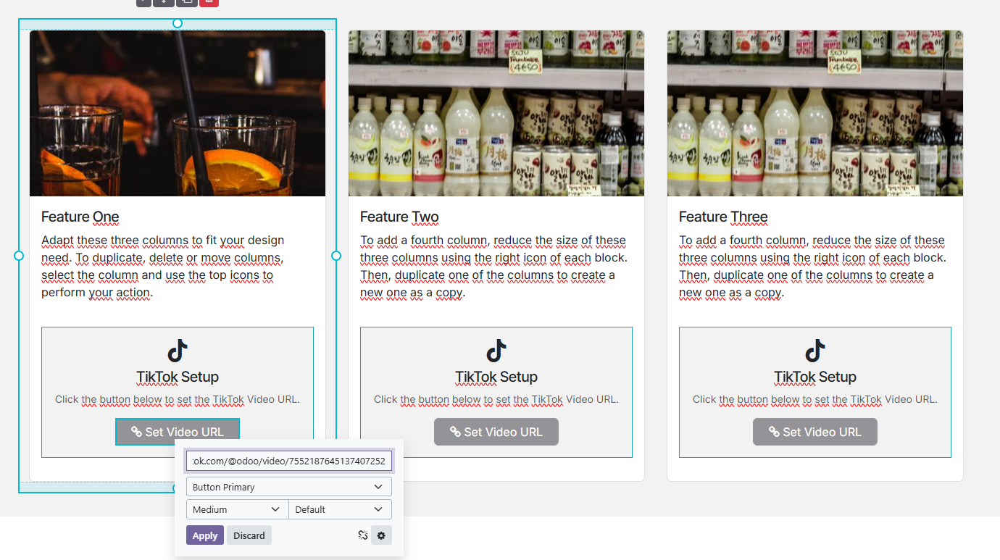
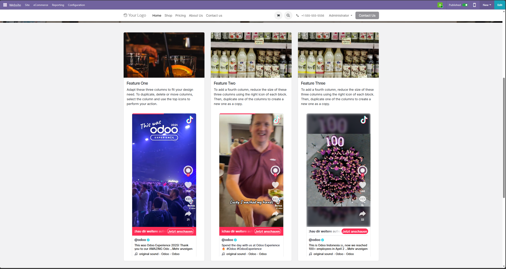

Simply drag the TikTok block into your page. In Edit Mode, click the "Set Video URL" button to configure the link.

The snippet is optimized for inner content, allowing you to place multiple TikToks side-by-side or inside columns.
